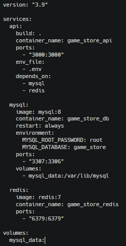
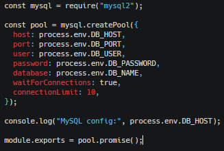
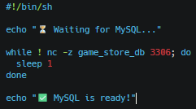
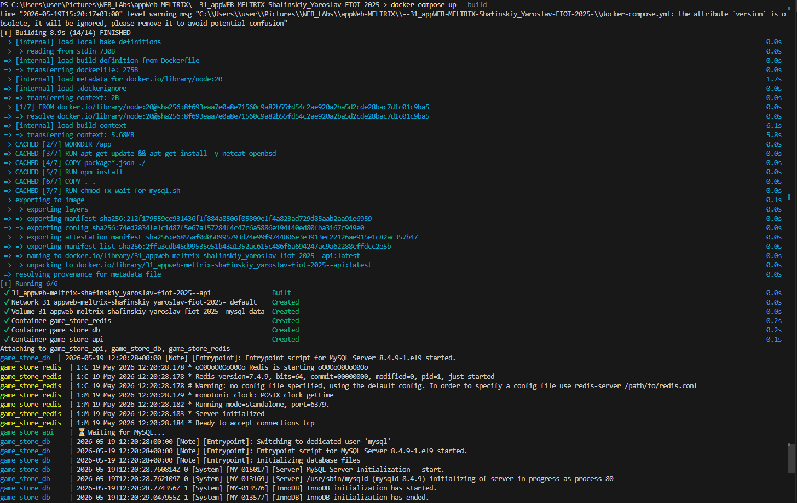
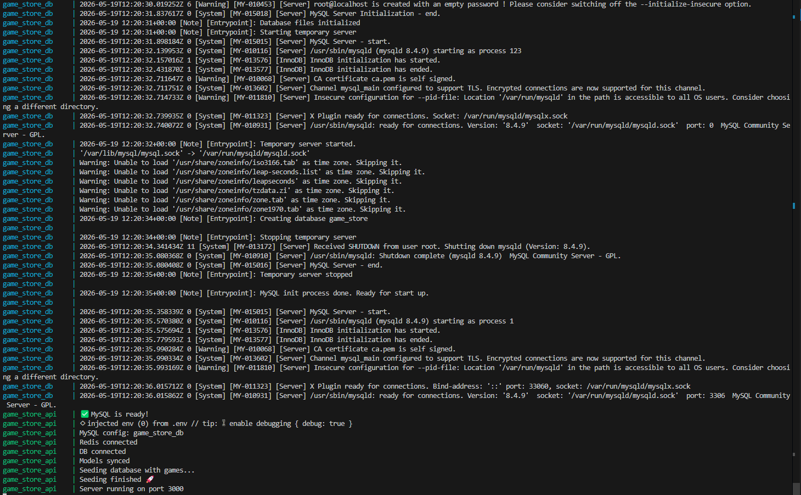

Зображення
Файл .env з маршрутами та конфеденційними данними

Створюємо Dockerfile

Створюємо файл docker-compose.yml

db.js

Встановлюємо утиліту очікування
wait-for-mysql.sh

Встановлюємо утиліту очікування
wait-for-mysql.sh
Запускаємо API в Docker

